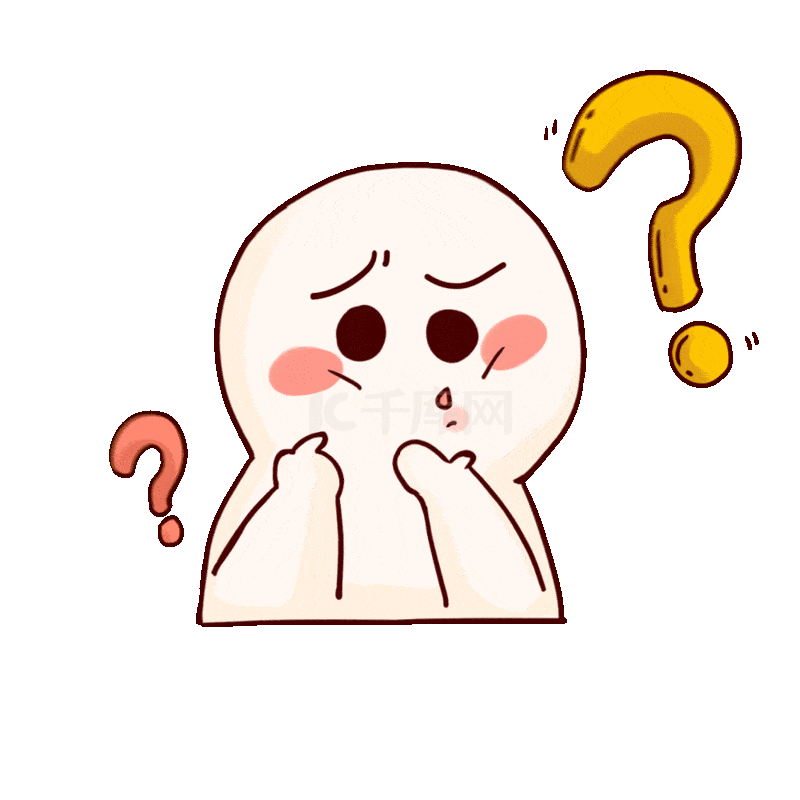
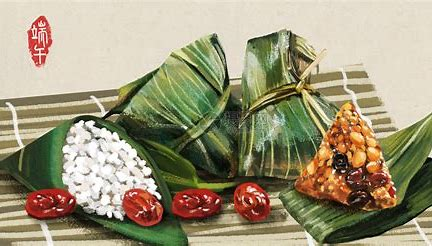

| 返回主页 | |
| 端午节，是中国四大传统节日之一，时间为农历五月初五，是集拜神祭祖、祈福辟邪、欢庆娱乐和饮食为一体的民俗大节，有端阳节、龙舟节、重午节、重五节、天中节等二十多个别称，是汉族、水族、纳西族、藏族、彝族、傣族、仡佬族、普米族等民族的传统节日。 端午节作为节日，形成于汉代。东汉应劭《风俗通义》中就有农历五月五日人们防避兵役鬼魅、防病防疫的记载。 端午节的起源，自古到今说法不一，主要说法有：纪念屈原说、迎涛神说（伍子胥含冤死后化为涛神）、恶日说、龙的节日说（即祭祀龙图腾说）、夏至说。 端午节的起源涵盖了古老星象文化、人文哲学等方面内容，蕴含着深邃丰厚的文化内涵，在传承发展中杂糅了多种民俗为一体，各地因地域文化不同而又存在着习俗内容或细节上的差异。 端午节主要风俗有挂钟馗像、躲午、帖午叶符、悬挂菖蒲、艾草、游百病、佩香囊、备牲醴、赛龙舟，比武、击球、荡秋千、涂雄黄、饮用雄黄酒、菖蒲酒，吃五毒饼、咸蛋、粽子和时令鲜果等，除了有迷信色彩的活动渐已消失外，其余流传至中国各地及邻近诸国。 | |
端午节的趣事你知道多少？
|
 |